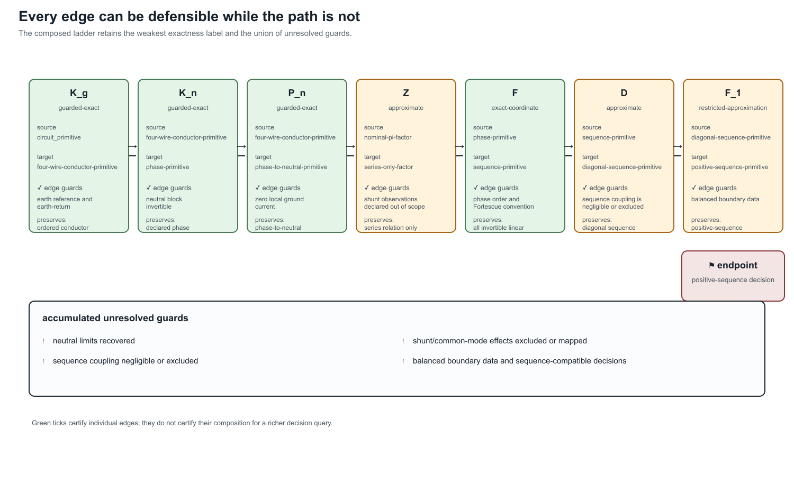

Four-wire impedance-model ladder
Page status: deterministic four-wire transformation witness; authored overhead and cable reproductions remain a follow-on case-study tranche.
This case turns a familiar engineering workflow into an auditable sequence of typed transformations. The source is a coupled four-wire conductor primitive with ordered terminals $a,b,c,n$, a series matrix $\mathbf Z_\ell$, and an explicit shunt matrix. The target views include a shunt-free series model, a neutral-reduced model, a phase-to-neutral model, sequence coordinates, a diagonal sequence approximation, and a positive-sequence view.
The source record retains frequency, length, units, ground convention, matrix ordering, and the fact that the fixture is deterministic rather than derived from a particular geometry solver. This is the minimum data needed to compare the views without mistaking a derived matrix for a primitive asset property.

The green checks in this plate certify edge-local contracts only. The red endpoint is intentional: composition carries forward the weakest exactness label and the union of unresolved guards. A positive-sequence decision model is therefore not certified merely because each preceding coordinate or elimination step has a valid derivation.
The path
\[\text{four-wire primitive} \xrightarrow{K_n} \text{Kron phase view} \xrightarrow{F} \text{full sequence view} \xrightarrow{D} \text{diagonal sequence view} \xrightarrow{F_1} \text{positive-sequence view}.\]
The phase-to-neutral map is also evaluated directly. With $T_v$ mapping conductor voltages to phase-to-neutral voltages and $T_i$ lifting phase currents under the zero-ground-current assumption,
\[\mathbf v_{\ell}^{pn}=T_v\mathbf v_{\ell}, \qquad \mathbf i_{\ell}=T_i\mathbf i_{\ell}^{p}, \qquad I_{\ell,n}=-(I_{\ell,a}+I_{\ell,b}+I_{\ell,c}).\]
The resulting phase-to-neutral relation is exact for the declared current map, but it does not recover common-mode voltage. This is a different contract from neutral Kron reduction, which requires an invertible neutral block and an explicit grounding/neutral-voltage assumption.
What the fixture checks
The generated experiments/generated/four-wire-impedance-model-ladder.json witness checks:
- the source matrix is complex symmetric but not Hermitian;
- the neutral block is invertible for the declared Kron rule;
- neutral current and phase-to-neutral voltage are recoverable under the declared map;
- the Fortescue transform is invertible;
- the deliberately non-circulant matrix produces visible sequence mixing;
- shunt deletion is visibly a model change; and
- every path edge carries explicit guards, preserved layers, forgotten facts, and risk tags.
The witness additionally composes the main path and the phase-to-neutral branch. Composition is accepted only when adjacent target and source types match; its result retains the weakest exactness label and the union of undischarged guards. The test suite includes a mismatched-path negative case.
The fixture therefore does not claim that a positive-sequence model is always wrong. It shows the narrower and more useful result: sequence coordinates are available by an invertible change of basis, while sequence decoupling and positive-sequence decision models require additional symmetry and query guards.
Decision consequences
The same bus–branch graph can support materially different decision models. Dropping shunts changes charging and loss observations. Eliminating the neutral can remove neutral-voltage observations and requires a recovered neutral-current limit. Deleting sequence coupling can admit a target that cannot reproduce an unbalanced source state. Retaining only positive sequence removes zero- and negative-sequence, phase-specific, and neutral decisions from the target unless they are separately certified.
This is why the case belongs beside the transformation register and the geometry-to-impedance fidelity ladder rather than in a catalogue of impedance labels. The question is not “which impedance model is standard?” but “which transformation path is admissible for this study?”
Reproduction
julia --project=experiments experiments/run_four_wire_impedance_model_ladder.jl
julia --project=experiments experiments/test/four_wire_impedance_model_ladder.jlThe current fixture is intentionally small. The next tranche can import the authored overhead-line and cable matrices, then add geometry/Carson provenance, balanced and unbalanced load rows, neutral-grounding variants, voltage and loss comparisons, and an OpenDSS or BMOPFTools cross-check.